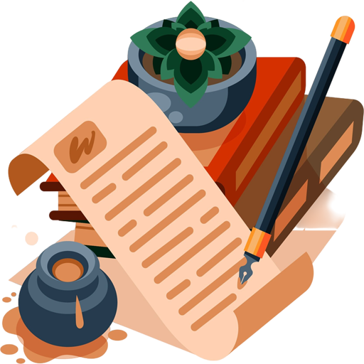

Я вас любил. Любовь еще (возможно,
что просто боль) сверлит мои мозги.
Все разлетелось к черту на куски.
Я застрелиться пробовал, но сложно
с оружием. И далее: виски:
в который вдарить? Портила не дрожь, но
задумчивость. Черт! Все не по-людски!
Я вас любил так сильно, безнадежно,
как дай вам Бог другими — но не даст!
Он, будучи на многое горазд,
не сотворит — по Пармениду — дважды
сей жар в крови, ширококостный хруст,
чтоб пломбы в пасти плавились от жажды
коснуться — «бюст» зачеркиваю — уст!>
Октябрь — месяц грусти и простуд,
а воробьи — пролетарьят пернатых —
захватывают в брошенных пенатах
скворечники, как Смольный институт.
И вороньё, конечно, тут как тут.
Хотя вообще для птичьего ума
понятья нет страшнее, чем зима,
куда сильней страшится перелёта
наш длинноносый северный Икар.
И потому пронзительное «карр!»
звучит для нас как песня патриота.
Прежде чем на тракторе разбиться,
застрелиться, утонуть в реке,
приходил лесник опохмелиться,
приносил мне вишни в кулаке.
Молодость мне много обещала,
было мне когда-то двадцать лет.
Это было самое начало,
я был глуп, и это не секрет.
